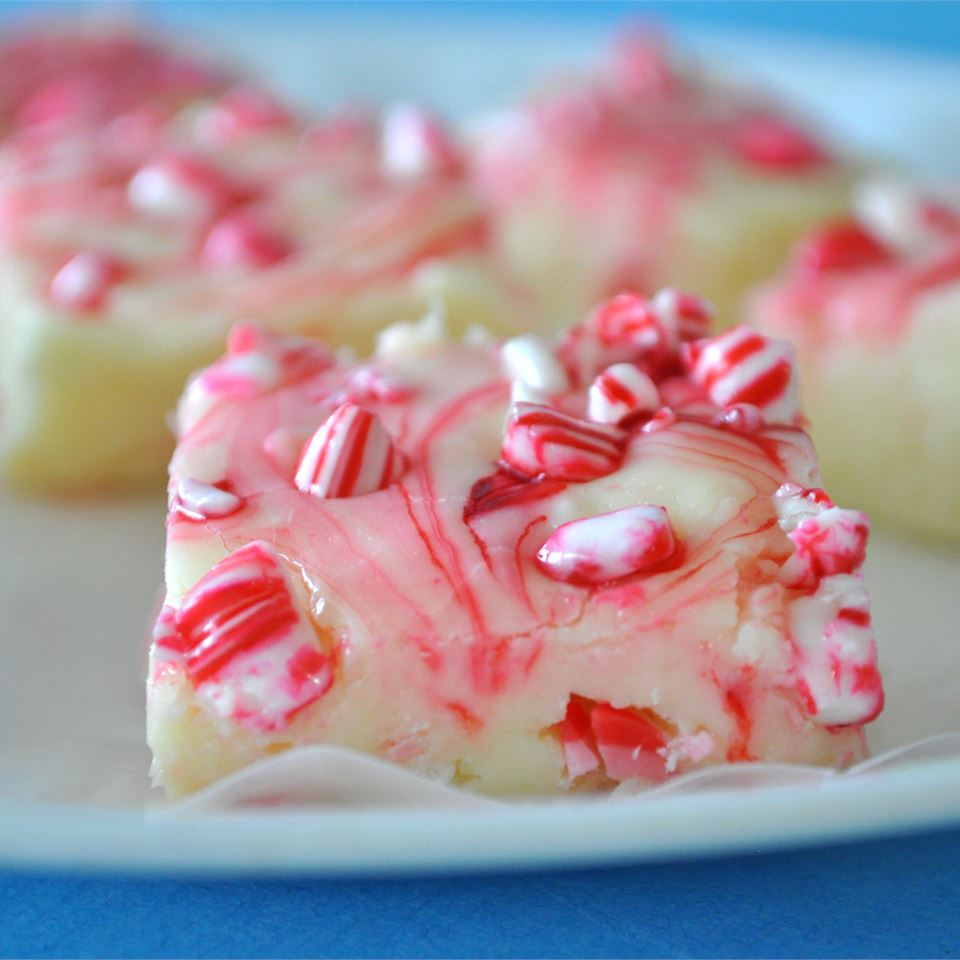

Peppermint fudge

Something new to try this holiday season
While it would be natural for a family to make a batch of gingerbread men, or even order a cheesecake,
in some families it's a tradition to make a batch of fudge, either for gifts or for desert. Here I'll go
over the process for making a candy cane fudge, starting with the ingredients.
- 20 ounces of vanilla baking chips
- 14 ounces of sweetened condensed milk
- 1/2 teaspoon of peppermint extract
- 1 and 1/2 cups of crushed candy cane
- a dash of green or red food coloring
- line an 8 inch baking pan with greased aluminum foil
- Combine the condensed milk and vanilla chips into a saucepan over medium heat
- Stir untill almost melted, then remove from heat and continue mixing till smooth
- When completely melted, mix in the food coloring, peppermint extract, and top with candy canes
- Spread mixture into the baking pan, and chill for 2 hours